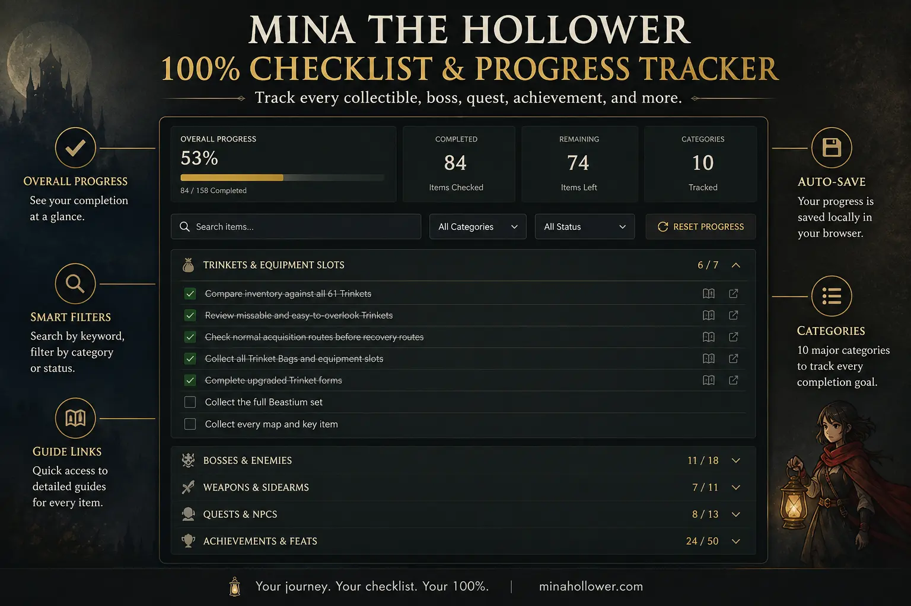

Mina the Hollower 100% Checklist & Progress Tracker
Track the major completion goals in Mina the Hollower, including Trinkets, bosses, weapons, Sidearms, quests, achievements, upgrades, endings, fishing, mirrors, and missable content.
Your checked items are saved locally in this browser. No account or sign-in is required.
Track every documented Trinket and Sidearm individually, then use the remaining cleanup goals to check bosses, achievements, secrets, upgrades, exploration, and New Game+ preparation.
Last updated:
Track Your Completion Progress
Check off completed goals, search for a specific task, or filter the list to show only unfinished items.
Trinket or Sidearm data could not be loaded. Check that game-data.js exists and is loaded before the Checklist script.
No checklist items match your search.

Related Completion Guides
Use these guides to verify exact locations, unlock conditions, achievement requirements, and anything still missing from your save.
Mina the Hollower Checklist FAQ
Does this checklist save my progress?
Yes. Checked items are stored locally in your browser. You do not need to create an account, but progress will not automatically sync between different browsers or devices.
How many achievements are in Mina the Hollower?
Mina the Hollower currently has 50 achievements or Feats, including story, challenge, Sidearm, Trinket, collection, and minigame objectives.
How many Trinkets are in Mina the Hollower?
Mina has 60 collectible Trinket slots. This tracker displays 61 entries because Glutton's Jug and its Plasma Jug upgrade are recorded separately.
Does this tracker list every Trinket and Sidearm?
Yes. The tracker records all 61 documented Trinket forms and all 15 Sidearms individually. Other completion areas remain grouped into practical cleanup goals.
What should I check before New Game+?
Review secret bosses, missable encounters, achievements, Trinkets, upgrades, quests, endings, fishing rewards, and anything easier to finish on the current save.
Can I reset the checklist?
Yes. Use the Reset Progress button above. The tool asks for confirmation before deleting saved progress.
Share Your Checklist Progress
Share your completion progress, report any missing collectibles, or point out information that needs to be corrected.